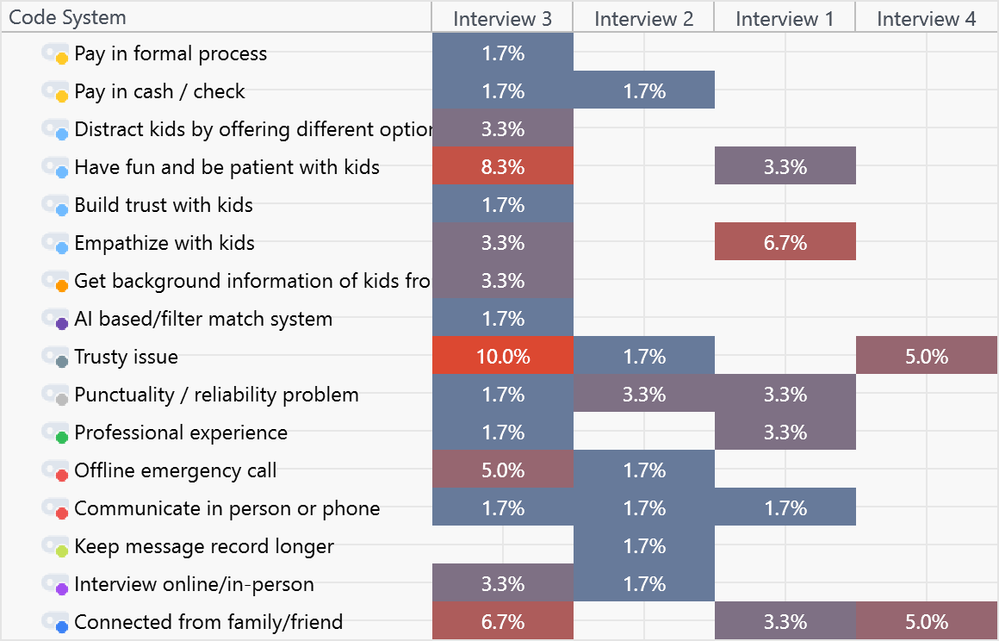
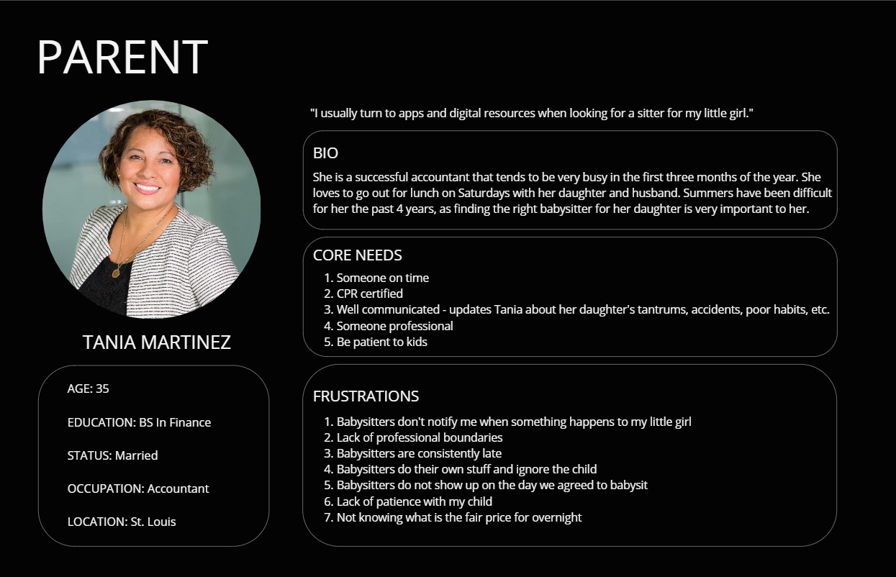
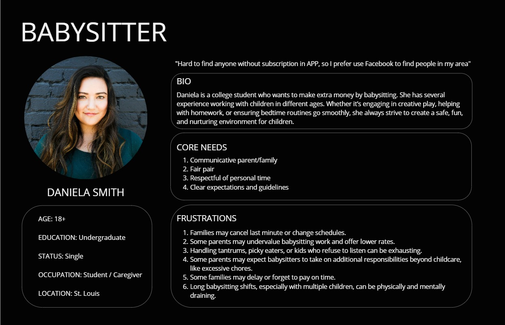
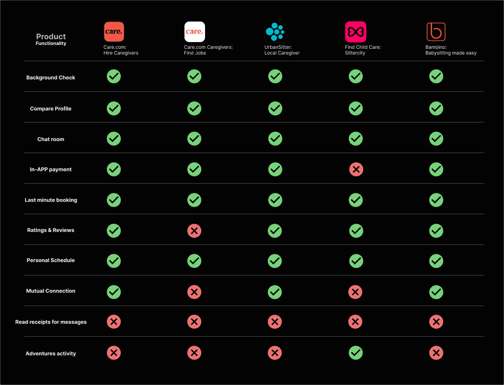
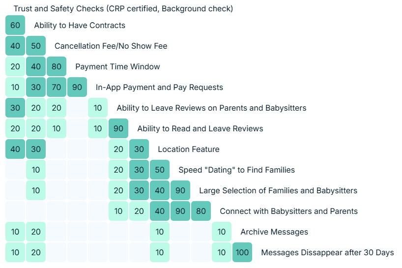
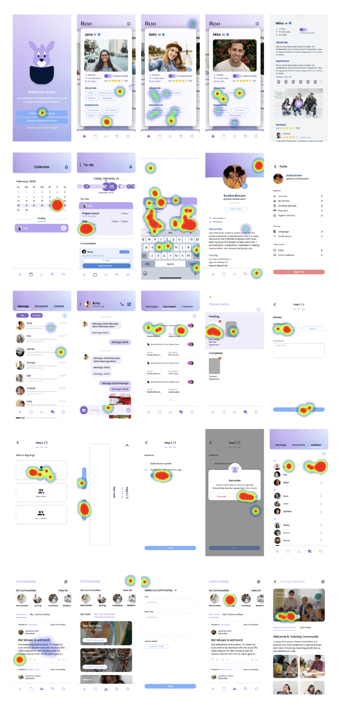
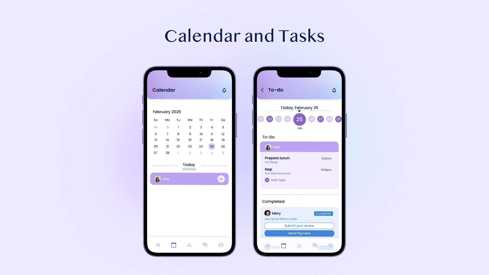
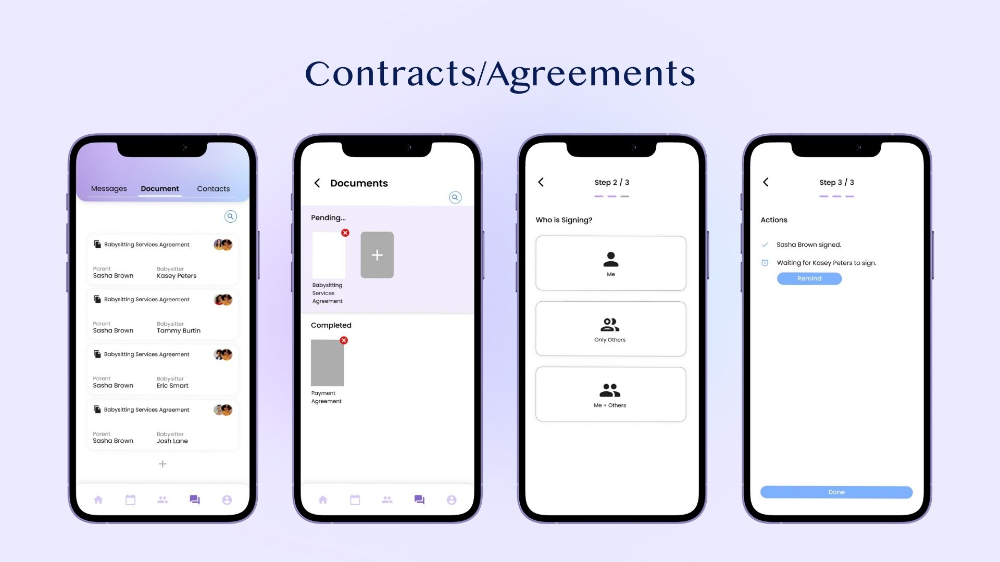
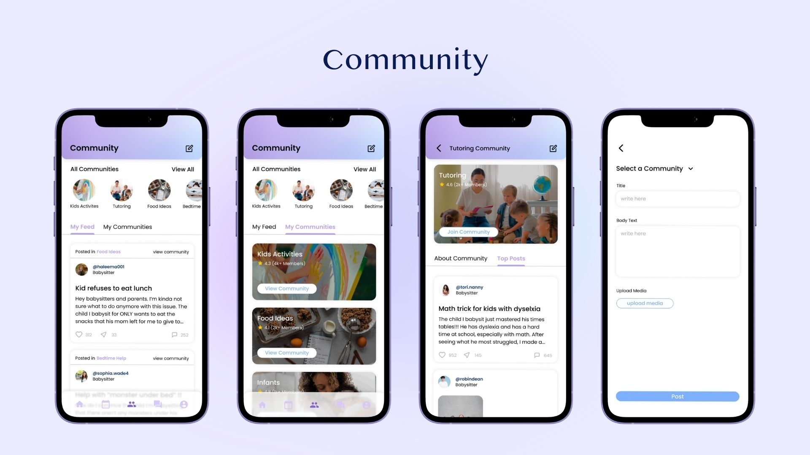

Roo
A two-sided matching app for U.S. community babysitters and families — built around a "mutual-trust mechanism". It replaces fragile verbal arrangements with mutual-friend chains, built-in contracts, and task checklists, validated through 18 rounds of Maze usability testing. 一個專為美國社區保母與家庭打造的「雙向信任機制」雙端媒合平台。以共同好友鏈、內建合約與任務清單，取代無保障的口頭約定，並透過 18 人次 Maze 量化可用性測試驗證。

The Overview專案基本資訊
Roo tackles the mess that happens when U.S. families hire nearby high-school or college students as casual babysitters with no third-party mechanism — late payment, fuzzy agreements, uneven service, lopsided time boundaries. Through deep qualitative research and MAXQDA grounded coding, I found the core pain isn't a lack of features — it's a trust vacuum. In a collaborative three-person team, we rebuilt the IA around a mutual-friend chain, contract templates, task lists, and request/send payment. Roo 解決美國社區中，家長聘請鄰近高中／大學生擔任臨時保母時，因缺乏第三方機制而生的亂象：延遲付款、合約模糊、服務品質不一、時間邊界不對等。透過深度質性調研與 MAXQDA 扎根編碼，我洞察出雙方最核心的痛點不是功能不足，而是「信任真空」。為此，我與另外兩名組員設計出結合共同好友鏈、合約模板、任務清單與要求付款的行動應用原型。
Context & the core problem背景與核心挑戰
Business context商業背景
Hiring nearby teens or college students as casual babysitters is a high-frequency norm in U.S. communities. Because these deals rest on verbal agreements, forums (Reddit, Facebook groups) overflow with grievances. Fixing this isn't just entering America's huge childcare market, it's the chance to turn an "informal underground transaction" into a "transparent digital service".家長僱用鄰近青少年或大學生當臨時保母賺外快，是美國社區的常態。由於這類服務高度依賴口頭約定，社群論壇（Reddit、Facebook）上充斥大量血淚控訴。若要改善這個痛點，不只是切入美國龐大的托育剛需市場，更是把「地下化非正式交易」轉化為「透明數位化服務」的商業機會。
Four breakdown points四大崩潰點
Boundary exploitation邊界控制權錯亂
Parents are habitually late, or pile on non-childcare chores ("your babysitter is not your maid!"), leaving sitters under huge emotional pressure.家長慣性遲到，或強加非托育庶務（保母不是清潔工！），導致保母面臨巨大情緒壓力。
Financial uncertainty保健因素的不確定性
Sitters face not being paid for late time, being forgotten, or pay that doesn't match hours ("family forgets to pay me") — breeding defensiveness.保母面臨遲到不給錢、忘記給錢、薪資與工時對不上的極度焦慮，引發強烈防衛心理。
Mutual first-contact fear初次接觸的相互恐懼
Sitters fear walking alone into a stranger's home; parents fear handing their child to someone whose background they don't know. Both lack a sense of safety.保母害怕隻身前往陌生家庭，家長也害怕把孩子交給完全不了解背景的陌生人，雙方皆嚴重缺乏安全感。
Inconsistent service quality保母品質良莠不齊
Parents struggle with unpredictable sitter quality — agreed-upon times are broken with no-shows or late arrivals, and the actual care often falls short of expectations, leaving parents with no reliable way to screen in advance.家長深感保母品質良莠不齊，事先約定好卻遲到甚至爽約，實際托育表現也與期待落差甚大，卻苦無可靠的方式事先篩選與評估。



Discovery & scope convergence產品探索與範疇收斂
Competitors had the features,but missing the psychological safety layer.競品功能齊全，缺的卻是「心理安全感」那一層
I ran a competitive feature matrix across Care.com, UrbanSitter, and Bambino. Background checks, chat, and built-in payment are already table stakes — but the deeper psychological-safety blocks like mutual-connection chains and contract signing were almost entirely blank. Rather than stack features like UrbanSitter, I let the data lead: MAXQDA coding put the heaviest weight (10.0%) on Trust Issue, so I converged the MVP onto three trust anchors.我針對 Care.com、UrbanSitter、Bambino 做了功能矩陣分析。背景審查、聊天室、內建支付已經是標配。但涉及底層心理安全感的「共同朋友鏈」與「合約簽署」幾乎全數留白。我沒有像 UrbanSitter 堆疊功能，而是依數據而行：MAXQDA 編碼顯示最高權重（10.0%）落在信任議題，於是把 MVP 收攏為三大信任錨點。

Prototyping & quantitative testing原型製作與量化測試
Card sorting set the architecture; Maze heatmaps refined the hierarchy卡片分類定架構，Maze 熱點圖修正資訊層級
Participatory design (card sorting)參與式設計（卡片分類）
To derive an IA that matches users' intuition, I ran a Lyssa card-sorting test. The data was decisive: 80% intuitively filed "message archive / auto-delete" under a standalone Messages section; 70% bound contracts together with trust & safety. That directly shaped my grouping and site map — avoiding a developer-centric "feature stack".為了推導出最符合用戶直覺的資訊架構，我用 Lyssa 進行卡片分類測試。數據很明確：80% 的用戶直覺把「訊息存檔／自動銷毀」歸到獨立的 Messages 板塊；70% 把合約與信任安全綁在一起。這直接影響了我的功能分組與 Site Map，避免了開發者視角的「功能堆疊」。

From wireframe to Maze iteration從線框到 Maze 迭代
I built the core prototype in Figma around 3 sections — Home (two-way blind matching), Calendar (to-do), and Request/Send Payment — then recruited 18 real U.S. users for think-aloud usability tests with heatmap analysis.我在 Figma 建立核心原型，圍繞3大板塊——首頁（雙向盲選配對）、行事曆（待辦清單）、付款（要求/發送付款），接著招募 18 位美國真實用戶進行放聲思考測試與熱點地圖分析。
Heatmap insight → progressive disclosure. On the sitter detail page, parents' focus clustered hard on +1 Mutual Friend and Badges (certifications). So in the final iteration I physically pinned and enlarged those two blocks, and tucked complex contract edits, payment views, and certification into Profile submenus — keeping the main Happy Path bone-clean.熱點洞察 → 漸進揭露。在保母詳情頁，家長的焦點高度集中在 +1 Mutual Friend（共同好友）與 Badges（專業證照）上。因此最終迭代我把這兩塊物理置頂放大，並把複雜的合約變更、付款視圖與認證收攏進 Profile 次級選單，讓主線 Happy Path 極度乾淨。

Human-centered insight人性洞察
A power-imbalanced relationship, and the boundary anxiety it breeds一段權力不對等的關係滋生的邊界焦慮
In informal community childcare, the parent (payer / adult) and sitter (often a high-school or college student) sit in a subtle power imbalance. Entering a stranger's home, the sitter is psychologically vulnerable — "the parent's late and I dare not ask for money; they tell me to wash dishes and I dare not refuse." That boundary exploitation is the top driver of sitter churn.在社區托育這種非正式行為中，家長（付錢方／成年人）與保母（常是高中或大學生）本質上處於微妙的權力不對等。保母進入陌生人家中、心理極度弱勢，往往面臨「家長遲到我不敢要錢、叫我洗碗我不敢拒絕」的越界壓榨。這正是導致保母流失最高的人性阻力。
To dissolve that anxiety, we designed a mechanism that forces both sides to tick the terms before the shift — hourly rate, no-show fee, overtime fee, and the specific chore scope. It converts an awkward, conflict-prone, face-to-face verbal negotiation into an objective system contract, defusing the sitter's frontline psychological defensiveness.為了化解這層焦慮，我們設計了一套機制，強制雙方在上工前於系統內勾選好「時薪、退單費（No-Show Fee）、超時費與特定庶務範圍」。把原本需要面對面、尷尬、可能引發衝突的口頭邊界談判，轉化為客觀的系統契約，化解了第一線保母的心理防衛。
Deliverables & learnings專案產出與反思
What I delivered最終交付物
A MAXQDA-based qualitative research framework with 11 key-need codes, a Lyssa-validated site map, and a hi-fi dual-side Figma prototype proven through 18-user Maze testing and SUS scoring.基於 MAXQDA 的社區托育質性調研與 11 項關鍵需求編碼架構、經 Lyssa 卡片分類科學驗證的 App 系統分組 Site Map，以及通過 18 人次 Maze 量化熱點測試與 SUS 量表驗證的高保真雙端 Figma 原型。
Walk-through video完整影片導覽
The shipped product最終成品



Just two moves — the mutual-friend chain and a built-in anti-mistake contract — scored highly on the Maze usability scale: users completed the once-awkward contract check and payment chase in under 30 seconds, materially erasing the uncertainty of stepping into an unfamiliar setting.僅僅透過「共同好友鏈」與「內建防呆合約」，便在 Maze 可用性量表上獲得極高評分：用戶在 30 秒內就能完成以往最尷尬的合約核對與款項追查，實質消滅了跨入陌生環境的不確定性
Reflection & next steps反思與未來展望
This taught me that the essence of any two-sided marketplace is to become the trust starting line for both parties' collaboration. My next core iteration is a U.S.-style community "pod childcare" model.這個專案讓我深刻領悟到，任何雙端媒合平台的本質，是要成為雙方協作的「信任起跑點」。我的下一個核心迭代方向，是引入美式社區的「共托經濟模型」。
The system auto-analyses families at the intersection of trusted friend chains — when two moms both need to go out on the same Saturday, it matches them to "co-hire one top-rated sitter to watch three kids in one living room", then auto-handles multi-party split billing and insurance boundaries in the back end.系統自動分析多個信任好友鏈交集的家庭：當兩位媽媽在同一個週六都需外出時，自動撮合她們「共同聘請一位高評級保母，在其中一家客廳同時照顧三個孩子」，並在後台自動完成多方拆帳與保險邊界判定。
That upgrades the product from an admin-friction anti-mistake tool into a "pod-childcare brain" that activates the trust assets of an entire community.讓這套產品從單純的行政防呆工具，升級為活化整個社區信任資產的「共托經濟大腦」。